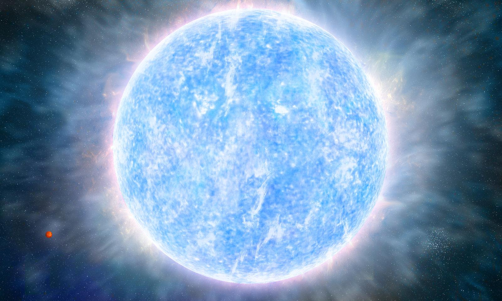
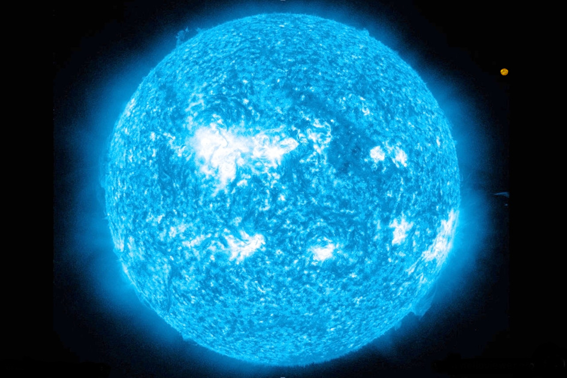
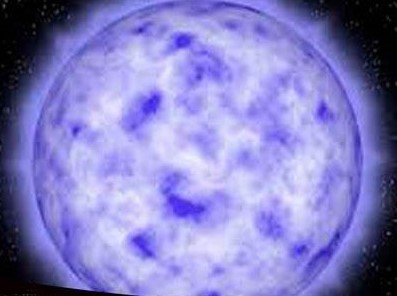

| TIPO | DESCRIPCIÓN | IMAGEN |
|---|---|---|
| Tipo A | De temperatura alta, de color blanco. |  |
| Tipo B | Calientes y luminosas, pero un poco menos que las de tipo O, y de color blanco-azulado. |  |
| Tipo F | Blanco-amarillentas, un poco más frías que las de tipo A. | |
| Tipo G | Son amarillas, como nuestro Sol. | |
| Tipo K | Naranjas, más frías que las de tipo G. | |
| Tipo M | Rojas, las más comunes y frías. | |
| Tipo O | Azuladas, muy calientes y luminosas. |  |